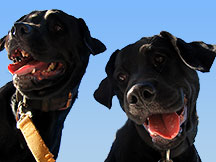

bill (circa 1986)
Rosie & Russell
Pay for my services
Contact Bill Morrison
Email: wrmorrison@gmail.com or Telephone: (808) 732-5548 - Hawaii
Brief Bio…
Bill was born and raised in Northern New Jersey. Shortly after high school he moved to the Caribbean where he worked as a scuba instructor and dive boat captain.
Since then, Bill has been fortunate to live & travel extensively throughout the Americas, Asia, Europe and the Pacific.
In the summer of 1994, Bill moved to Oahu to attend at the University of Hawaii. He now teaches digital media and designs websites for a living.
Bill lives in Kaimuki with his two black dogs and surfs regularly.
Full Resume (CV)…
Significant Employment Overview
Freelance Web Designer and Digital Media Consultant, O'ahu, Hawaii (January 2006 - Present). Heading a variety of web site developments for social service, art, business, and education groups. Conduct training sessions for select Adobe software. Additional efforts in graphic design and project consulting.
Instructor/Teaching Assistant, Pacific New Media, University of Hawaii at Manoa (Spring 2005 - Present). Responsible for a 23 seat Mac computer lab. Instructor for both Adobe Photoshop and Flash classes. Assist in the smooth running of classes taught by some of the planet's foremost leaders in web design and digital imaging.
Research Assistant, Coastal Geology Group, University of Hawaii at Manoa (Summer 2000 & March 2002 - September 2005). Responsible for photo interpretation and digitization of coastal features for a shoreline analysis project using derived methodology to quantify erosion processes. Map construction and layout. Final products included in a shoreline atlas database published under the auspices of the USGS, and a map series for local legislation group.
Dive Instructor / USCG 100 Ton Boat Captain, Caribbean & Pacific (1990 -1998). Operated and maintained over 50 different dive boats up to sixty feet in length. Responsible for the safety and underwater guidance of up to thirty individuals. Conducted courses from Introductory Scuba to Divemaster levels. Jobs also included retail sales, insurance processing, surveying and advertising.
Shorter Employment, Internships & Projects
Survey/Field Technician, GEOD Corporation, New Foundland, New Jersey (Summer 2001). Functioned as a conventional & GPS survey assistance (bridge and topographic) and boat operator for a flood control study sponsored by the US Army Corps of Engineers.
Cartographer, State Foundation on Culture and the Arts, Art in Public Places Program (Summer 2000). Created maps to facilitate restoration of a major University of Hawaii art piece. Responsible for the mapping and labeling of small scale sculptures on wall face to ensure accurate replacement after renovation work.
GPS Assistant, T.R.E.E. Reforestation Project, Kailua Kona, Hawaii (June 2000). Responsible for GPS unit setup, maintenance and operation. Project planning, post processing and map production. Team aims included gathering of topographic and vegetation data on a parcel of land sited for development of a children’s education camp.
GPS Project Intern, Department of Land and Natural Resources, Honolulu, Hawaii (Fall 1999). Assisted in the initial utilization of the Trimble ProXR Global Positioning System for mapping and analysis of hiking trails. Tasks included the configuration and testing of GPS hardware and software, as well as the utilization of gathered data in a GIS environment.
GIS Project Intern, Project Intern, CB Richard Ellis, Honolulu, Hawaii (Fall 1999). Assisted professional, real estate GIS/Cartographer in map generation and site analysis. Responsibilities included software (MapInfo) utilization for database development, analysis of potentially profitable placement sites for restaurants and the output of coherent cartographic displays.
GIS Project Intern, New Jersey Department of Health and Environmental Services, Bergen County, New Jersey (July 1999). Assisted with ESRI based GIS project helping to bring volunteer dental care to Jersey City school children. Responsibilities included project planning, data entry, and address matching.
Project Intern, Dames and Moore, New York City / Pearl River, New York (January 1999). Assisted in completion of comprehensive environmental engineering proposal for Jersey City, Liberty State Park area using ArcView and New Jersey Department of Environmental Protection data and images for wetland analysis. Responsibilities included the acquisition of aerial photographs and data from internet and private sources, proposal writing and general office duties when needed.
Research Assistant, Geography Department, University of Hawaii (Fall 1998). Obtained literature and other resources for professor specializing in human geography.
Community & Volunteer
Leahi Native Plant Restoration and Land Stewardship, O'ahu, Hawai`i (January 2007 - Present). Spearheaded the clean-up and trail repair efforts at one of the neglected coastal lookouts. Currently growing hundreds of native plants to be outplanted in the fall of 2008. Projects aims to help increase community responsibility of the area.
Kaka`ako Next Step Shelter Volunteer, O'ahu, Hawai`i (Summer 2006 - Summer 2007). Gave many hours of services to the children and adults of this transitional facility. Provided healthy fitness opportunities by installing volleyball and basketball courts and donating numerous recycled bicycles. Set up a LINUX computer lab. Created the website for the Hawaii H.O.M.E. project, the weekly in-house clinic run by doctors and medical student from the adjacent John A. Burns School of Medicine.
Volunteer Farm Assistant, Spitalfields, London, England (Spring 1999 and Fall 2000). Assisted in the construction of compost stalls built to support farm waste, soil generation and sales. Headed the scanning and digital archiving of farm photographs onto CD-ROM and creation of farm map for general location inquiries. Headed the construction of a twenty-eight foot greenhouse built as part of a community horticultural project. The project goals were to bring educational and leisure activities to isolated Bengali women in the poorest area of London.
Education
Bachelor of Arts Degree (with distinction), University of Hawaii at Manoa (May 2000). Majored in Geography with a concentration in Cartography. G.P.A. 3.78/4.0. Dean’s List, Golden Key Honor Society and recipient of the Neil Bowers Award for Outstanding Graduating Senior in Geography.
Specialty Courses as related to above degree: Map and Aerial Photo Interpretation, Cartographic Illustration, Advanced Cartography: 3D Modeling, Geographic Information Systems Map and Aerial Photo Interpretation, Cartographic Illustration, Advanced Cartography: 3D Modeling, Geographic Information Systems
Master’s Degree (pending), Geography Department, University of Hawaii at Manoa. Completed required coursework. Actively working on an online, physical fitness mapping project involving the Diamond Head area of O`ahu.
Operating System and Software Experience
Proficient on both PC & Mac. Very strong in Adobe PhotoShop, Illustrator, InDesign, Dreamweaver, Flash and Fireworks. Experienced with the mapping software's MicroCAM, MicroDEM, AutoCAD, ArcView, ERDAS, MapInfo, PCI, World Construction Set and Surfer.